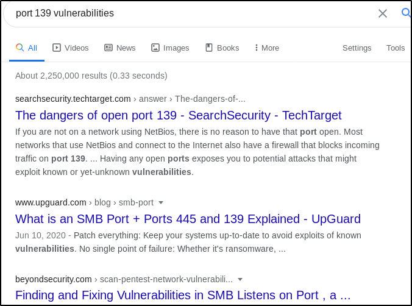

Enumerating HTTP/HTTPS. (Part 1)
So from our nmap scanwe've got 22/SSH, 80 & 443 which are hosting websites, 139 which has file share with samba on it.
We need to think like an attacker would and figure out our point of attack. As a beginner, I don't expect you to know that port 80 & 443, 139 are commonly found with exploits, it'll take a series of hacks to know that off the top of your head. But what I suggest is googling your port, to find out about thier vulnerabilities.


Remember, Google is your best friend. I really think it's the best way to get a grasp of the possible vulnerabilities and exploits, just google it, until you have a firm grip on some basic ports and their vulnerabilities.
We're going to start with the enumeration of port 80 & 443.
The first step should be to go out to the website, so copy the target IP address and paste it in the url search bar and there's nothing to get from visiting the page.

So lets scan for vulnerabilities, using a new tool called nikto. Nikto is a vulnerability scanner, and it's a great beginner tool for practicing with ctfs or boxes. If you use this tool against a clients website and the site is running good security, it might auto block your scan if it's detected, not always though. So if you get the sense that a client has a web application firewall, you'll get a feel for this has you get more practice, don't use it.

From the scan result you can see that it detects theserver version running, giving us some vulnerabilities back and tells us what's missing in terms of protection (which isn't really important if it's a external pen test but are more inportant for a web applic pen test.). It shows the outdated software and in a case where we find these on a clients site, we put these finding on the report (I'll show you how to go about making reports in a later section), It also tells us the types of attacks that can be carrie out with the available vulnerabilities
Save the scan, just copy it and save it into a directory, and gedit a file for it. You are free to name your file whatever you like. This is part of bring a good pentester, saving your scans and having them available, incase you need to go back to them or make refrences.